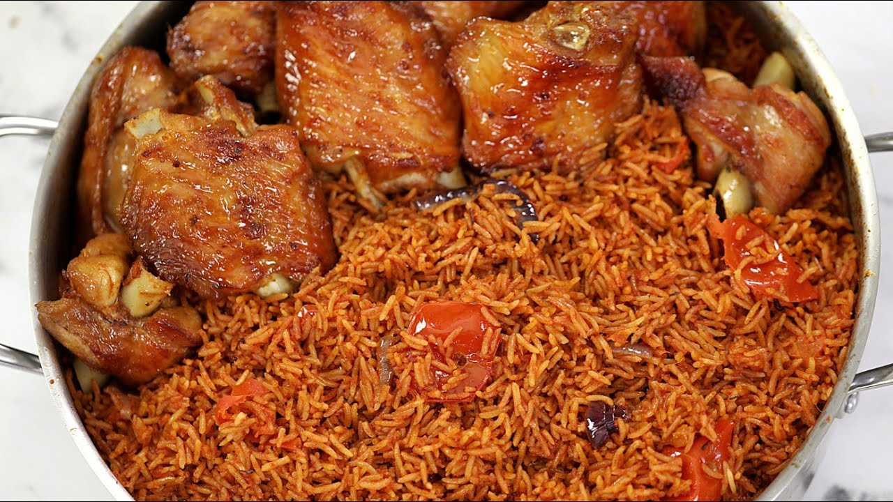

Nigerian Jollof Rice

Description
This is what you should prepare for that special person in your life or when you are playing host to several
special people. It’s an inner caucus affair!
Ingredients
- 3 cups rice
- 8 pcs turkey wings
- 250g shrimps
- 500mls (2 cups) Tomato Stew base
- 1 red bell pepper
- 1 green bell pepper
- 1 sweet pepper (fresh paprika)
- 1 habanero pepper (scotch bonnet pepper)
- 2 red onions
- Vegetable oil
- Seasonings (add to your taste
- 2 big seasoning cubes
- Chicken stock
- 2 tsp thyme
- 1 tbsp garlic powder
- 1 tsp ginger powder
- 1 tbsp White pepper
- 1 tsp curry powder
- Salt
Steps
-
Put the turkey wings into a pot, add some of the onions (2d above), garlic powder, ginger powder,
white pepper, thyme and seasoning cubes.
-
Mix very well, cover and let it steam on medium heat.
-
When the turkey wings are pale all over, add some water to cover them and cook for 15 minutes.
-
Take them out and grill/broil in the oven at 200 degrees Celsius or 400F till golden all over.
-
To the turkey stock, add the chicken stock and some of the tomato stew. Cover and leave it to boil.
-
Add the precooked rice and salt to taste. Stir and add the rest of the tomato stew on top then cover the
pot with aluminum foil, place the lid tightly and start cooking on low heat.
-
Pour the blended peppers and onion (2b above) into a pot and boil till all the water dries up.
-
Add some oil into the boiled pepper, fry to a bit and add the chopped peppered and onions (2c above).
Fry for about 3 minutes, add the curry powder and some salt to taste.
-
Add the grilled/broiled turkey wings and mix till every turkey wing is coated with the pepper sauce.
-
By now the water in the rice should be dry. Add the peppers and onions reserved for the Jollof rice
(2a above). Mix till everything is well combined.
-
Shallow-fry the shrimps till golden all over.
back top
Home Page
More Recipes